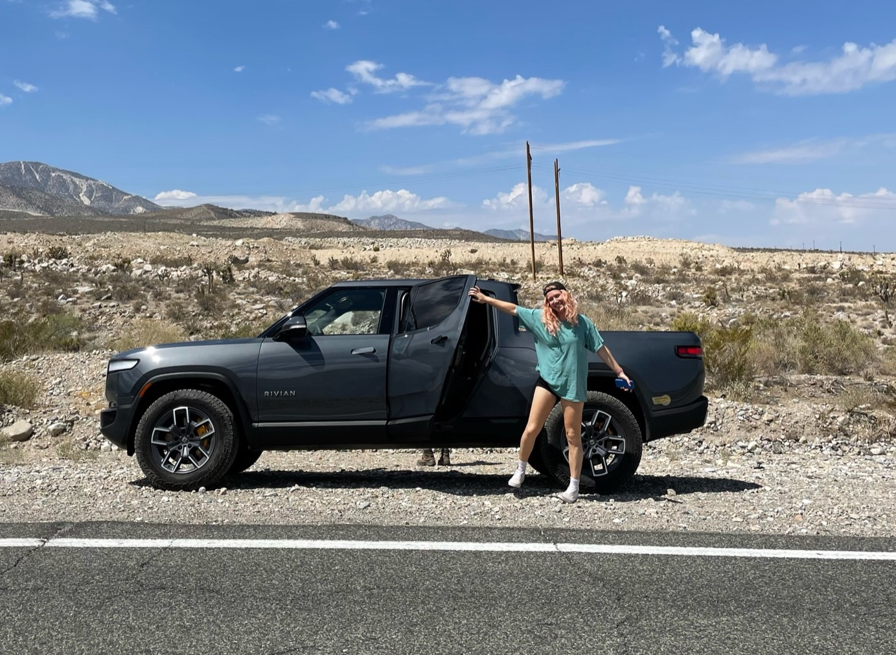
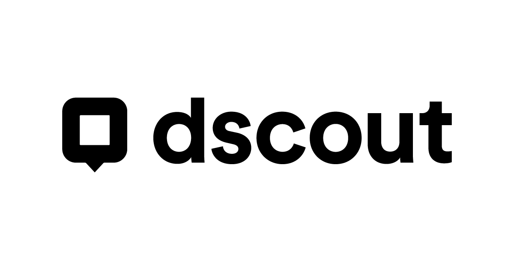

Rivian Automotive Internship
12 week internship, June - August 2022
12 week internship, June - August 2022
I had a 12 week internship at Rivian Automotive working as a User Experience Research Intern. Rivian Automotive is an American automaker that specializes in producing electric adventure vehicles, such as pickup trucks and SUVs. Their mission is to create sustainable transportation that enables people to explore the world while preserving the environment.
During my time at Rivian, I led an end-to-end diary study aimed at uncovering insights about a specific user behavior. I developed the research questions and study design, recruited and managed participants, collected and analyzed the data, and presented the results to stakeholders at the senior and director level. The study provided valuable insights into the target behavior and informed design decisions and roadmaps for future products.
In addition to leading my own study, I collaborated with senior researchers on their projects, contributing to the execution, analysis, and reporting of research. This included conducting user interviews, analyzing qualitative data, and synthesizing findings into actionable recommendations.

At Rivian, the research team assigned me the task of investigating a particular user behavior that had been identified through anecdotal findings in previous research. This was the first study conducted by Rivian to evaluate this specific behavior. At the outset of my research, we had only made assumptions about the prevalence of this behavior, and some stakeholders were skeptical about the value of investigating and designing for it.
Objectives:
Introduction
Participant expectations and setup
Diary Entries
x2 entries documenting target behavior
Reflection
Participants final thoughts and pain points
I chose a diary study as the research method because it allowed me to capture participants' behavior in the target environment. This method also enabled me to recruit a diverse group of participants from across the country, which provided valuable insights into different user contexts and preferences. Additionally the method helped us learn when the behavior occurred, why it occurred and how the participants felt about it.

Recruitment Criteria:
The recruitment criteria for this study were selected to obtain a comprehensive understanding of the target behavior in diverse contexts. We included owners of both Electric Vehicle (EV) and Internal Combustion Engine (ICE) vehicles to investigate any possible differences between the groups, as the target behavior was not exclusive to EV owners. Furthermore, we recruited a diverse group of participants, including parents of varying ages and with different numbers of children, some of whom were also EV owners, to ensure a representative sample and to explore any potential impact of parenthood on the behavior. Overall, these criteria allowed us to gather a rich and diverse dataset that could offer valuable insights into the behavior.
To analyze the diary study data, I started by quickly skimming each entry as it came in and recording preliminary thoughts. After the study was complete, I began a thorough process of tagging and analyzing the data. During this process, I identified several overlapping themes and created a mind map to visualize the connections between each theme.
I concluded my work by synthesizing my results into a presentation for my stakeholders and conducted in depth one-on-one meetings with key stakeholders from each team impacted by my results.
My project significantly impacted several teams at Rivian, including Design, Charging, Adventure Products, and Infotainment. Through my research, I helped shape the roadmap and strategy of multiple products under development. The Design team incorporated user insights into the development of R2, and the Charging team used the data to inform the development of RAN locations. The Adventure Products and Infotainment teams also gained a deeper understanding of users' needs and preferences. Overall, my project had a substantial impact on Rivian's product development process, creating more user-centric and effective products.
Through my work on this project, I learned effective strategies for delivering results to skeptical stakeholders. Additionally, I honed my skills in study design, data analysis, and communication of findings to stakeholders. Moving forward, I plan to incorporate the lessons learned from this project into my future work by continuing to be persistent in advocating for user-centric research, being flexible in finding alternative research methods, and seeking out diverse perspectives to ensure comprehensive insights.
The details of this project are protected by NDA. Please contact me to hear more about this project and its impact.
Contact Mecreated with
Website Builder Software .